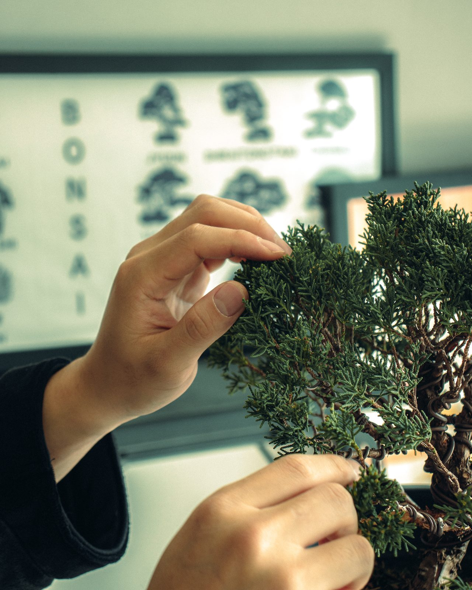

분재는 빠르게 완성되지 않습니다.
한 번의 가지치기. 한 번의 철사걸이.
그리고 지나가는 계절.
그것이 쌓여 조금씩 하나의 형태가 됩니다.
귀연은 나무를 빠르게 완성하지 않습니다.
시간이 지나며 좋아지는 나무를 만듭니다.
GUIYEON귀연龜蓮
대표 작품Selected Works
View all works
GUIYEON
Bonsai Artist · 귀연
조경을 공부했습니다. 넓은 땅의 나무를 보던 눈으로 지금은 화분 하나의 나무를 봅니다.
자르기 전에 먼저 한 해를 지켜봅니다. 나무의 방향을 정하기보다 이미 가지고 있는 방향을 찾습니다.